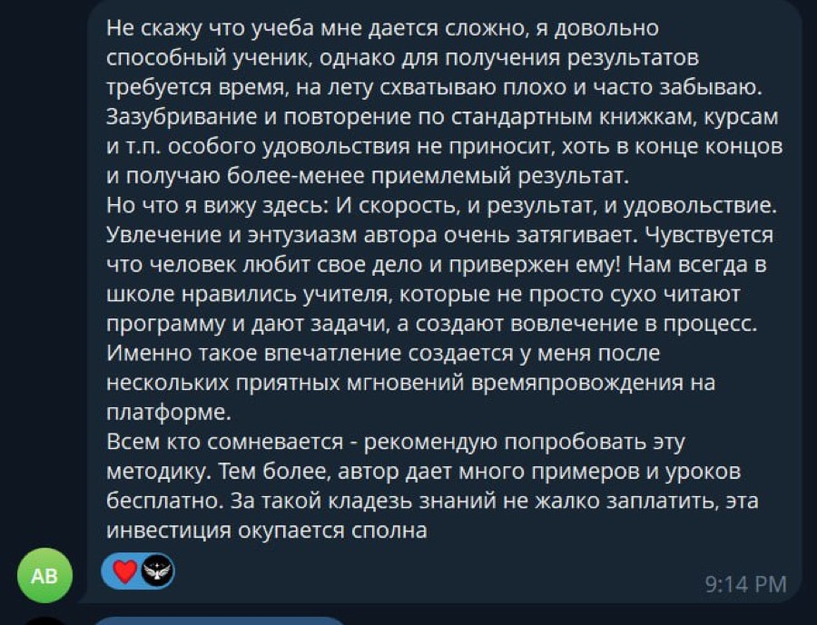

Старший · репортёр
Konjunktiv I
Передаёт, что сказали другие. Сухо. Нейтрально. Без эмоций. Растёт из Präsens.
Говорят, это сложно. Говорят.
Разбираю форму, которой немцы пересказывают чужие слова. Максимально просто. Даже пятилетка поймёт. Ну, пятилетка с B1.
Разобраться за 7 минутИстория
Сижу в Австрии. Утро. Кофе. Решил читать новости на немецком. По-взрослому.
Первая же строчка.
Der Minister sagte, die Lage istsei stabil.
Sei? Где ist? Кто сломал глагол?
Полез разбираться. Оказалось, никто ничего не ломал. Это Konjunktiv I. Форма, которой немцы говорят: я не вру, я просто передаю.
Рассказываю по шагам. Чтобы вы не зависали над новостями, как я.
Кто это вообще
Жили-были два брата. Konjunktiv I и Konjunktiv II. Фамилия одна. Характеры разные.
Старший · репортёр
Передаёт, что сказали другие. Сухо. Нейтрально. Без эмоций. Растёт из Präsens.
Младший · мечтатель
Живёт в «если бы». Wenn ich reich wäre… Растёт из Präteritum.
← тяни ползунок →
И что очень важно. Время тут почти ничего не решает. Präteritum Konjunktiv может говорить про сейчас и даже про завтра.
Главное не «когда». Главное, как ты относишься к тому, что говоришь.
Второй мечтает.
Первый пересказывает.
Сегодня разбираем первого.
Образование
Konjunktiv I собирается как шкаф из IKEA. Только без лишних шурупов. Выбери глагол и смотри.
Главная фишка
В индикативе nehmen скачет как на батуте: du nimmst, er nimmt. В Konjunktiv I всё спокойно. Никаких i. Никаких умлаутов. Щёлкни переключатель.
ich nehme, wir nehmen, sie nehmen совпали с обычным индикативом. Немец не поймёт, пересказываешь ты или утверждаешь.
Поэтому тут зовут старшего брата, Konjunktiv II: sie nähmen, sie hätten, sie würden nehmen.
Вспомогательные и модальные
sein единственный, кто не совпадает с индикативом ни в одном лице. Поэтому в новостях его видно чаще всех. Остальных боссов тоже надо знать в лицо.
seiest или seist? Оба живые. seist звучит современнее. В тесте ниже будет он.
Perfekt и Futur
Хорошая новость. Новых слов не будет. Берёшь уже знакомых боссов habe, sei, werde и клеишь как обычно.
Futur II: du werdest gelesen haben. Если он тебе когда-нибудь понадобится, напиши мне. Мне правда интересно, где.
Употребление · часть 1
Главная квартира у него в новостях. Но есть ещё пять. Бывает там редко, но прописка есть.
Es lebe die Freiheit!
Да здравствует свобода!
Переводим через «да» или «пусть». Звучит как тост на свадьбе, только по-немецки.
Man nehme 1 Kilogramm Mehl.
Возьмите килограмм муки.
Стиль бабушкиной поваренной книги. Обычно с man. Сейчас пишут проще, но узнавать надо.
ABC sei ein gleichschenkliges Dreieck.
Пусть ABC равнобедренный треугольник.
Условие задачи. «Пусть» на немецком это sei.
…und sei er noch so groß
…как бы велик он ни был
Так писал Гейне. Ты так писать не будешь. Но узнать в тексте должен.
Er sprach lauter, damit man ihn besser höre.
Говорил громче, чтобы его лучше слышали.
Можно и индикатив: hörte. Konjunktiv звучит книжно.
Edel sei der Mensch, hilfreich und gut.
Будь благороден, человек, отзывчив и добр.
Это Гёте. Пожелание, которое в теории выполнимо. На практике как пойдёт.
Употребление · часть 2 · главное
А вот ради чего Konjunktiv I вообще существует. Ты передаёшь чужие слова и как бы говоришь: это сказал не я. Претензии к автору.
Слово то же. Форма другая. Потому что между вами посредник.
В русском такого нет. «Якобы» уже с сомнением. А Konjunktiv I не сомневается. Он просто держит дистанцию.
Времена в косвенной речи
В пересказе важно одно: событие было раньше слов, одновременно с ними или будет потом. Konjunktiv I и II тут работают в паре. Жми на точки.
Das Mädchen sagte, sie heiße Anita, habe vor Kurzem ihr Abitur gemacht und werde in einem Museum arbeiten.
Девушка сказала, что её зовут Анита, она недавно сдала выпускные и будет работать в музее.
Это сигналы. Видишь их, жди Konjunktiv I.
Ich zweifle, ob er recht habe. Сомневаюсь, что он прав.
Сохрани
Сказал не я.
Я только передал.
Тест
10 вопросов. Без регистрации и смс. Ошибёшься, я объясню почему.
Серьёзно. Konjunktiv I это не A2. Если ты дочитал до сюда, ты уже не новичок.
Вопрос в другом. Что дальше?
на B1 и не понимаешь, куда дальше?
Знакомо:
Проблема не в тебе.
Всё просто разбросано.
Мы собрали всё в одно место
Платформа для немецкого от A0 до C1. Гайды в том же стиле, что ты сейчас читал. Смотри, как это выглядит изнутри. Без монтажа. Просто запись экрана.
Грамматика, лексика, реальные фразы. В каждом объяснение, видео и упражнение с ответами и разбором.
С транскрипцией. Не просто список, а реально на слух.
Версия каждого гайда в Gemini: озвучка немецких слов, три упражнения и проверка от ИИ.
Темы с TestDaF, Goethe C1 и telc. Словарь с МФА, текст как из газеты, три диалога, тест и чат с ИИ.
Goethe, telc, DTZ, ÖSD, TestDaF. Готовишься без нервов и паники.
Умный трекер в Notion, флеш-карты. Фильмы, книги и подкасты уже отсортированы по уровню.




Скачиваешь Notion на телефон или ноутбук и заходишь без интернета. В метро. В очереди в Bürgeramt. В обед на работе.
Платишь один раз. Доступ навсегда. Все обновления для купивших бесплатно.

Если остались вопросы,
задай их по кнопке ниже
Telegram: @stellasdeutsch
учить немецкий кусками.
Тогда тебе на платформу Stellas:
Немецкий не усложняет.
Он просто хочет знать, кто это сказал.